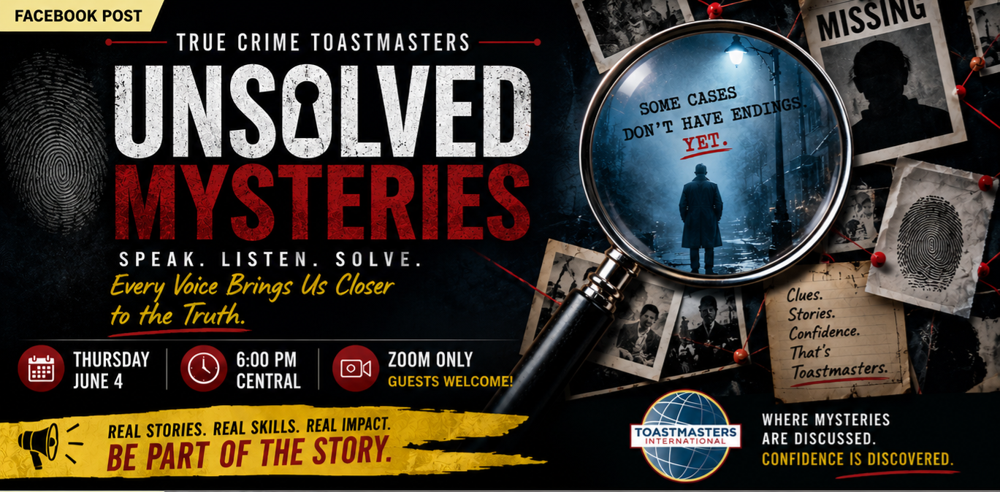

Stonehenge
Anna
Ancient mystery? Maybe. Patrick Starfish’s ancestors? Also possible in this room.
The first Thursday case room opened with two prepared speeches, a creative Table Topics session, and a club full of people proving that public speaking gets easier when the meeting has a pulse.

Guests and members stepped into a mystery-style meeting built around clues, stories, evaluations, and quick thinking. The tone was serious when the story required it, playful when Table Topics opened the evidence locker, and supportive throughout.
Verdict: strong storytelling, useful feedback, and just enough weird to make the meeting memorable.
Leo delivered a documentary-style true-crime speech about three unresolved cases where video evidence raised questions but did not bring closure.

Hassan presented a Pathways Level 3 Motivational Strategy speech on reentry support for formerly incarcerated individuals, including transitional housing, mental health support, employment readiness, life skills training, and wraparound support.
The speech connected practical services with a bigger human question: what does it take to rebuild a life with structure, dignity, healing, and accountability?

Participants were asked to “solve” famous mysteries with creative, outlandish explanations. Accuracy was optional. Commitment was not.
Ancient mystery? Maybe. Patrick Starfish’s ancestors? Also possible in this room.
The disappearance led straight to Illuminati headquarters. Case closed? Not even close.
Celtic gods and a magical floating stage entered the evidence record.
The gold mystery detoured through Golden Circle pineapple. Unexpected, but delivered with confidence.
Real alien contact and classified files. The truth was out there — and apparently on the agenda.
Impromptu speaking improves when the prompt gives you permission to play.
The June 4 meeting had the right mix: serious speeches, visual atmosphere, guest energy, and playful improvisation.

The July holiday moved the next meeting to Thursday, June 25. The theme is The Perfect Alibi, and guests are welcome.
Bring a curious mind, a flexible theory, and a story that can survive a little friendly cross-examination.
Register on Zoom, join the case room, and see how mystery can make public speaking more fun.
Register for the next meeting